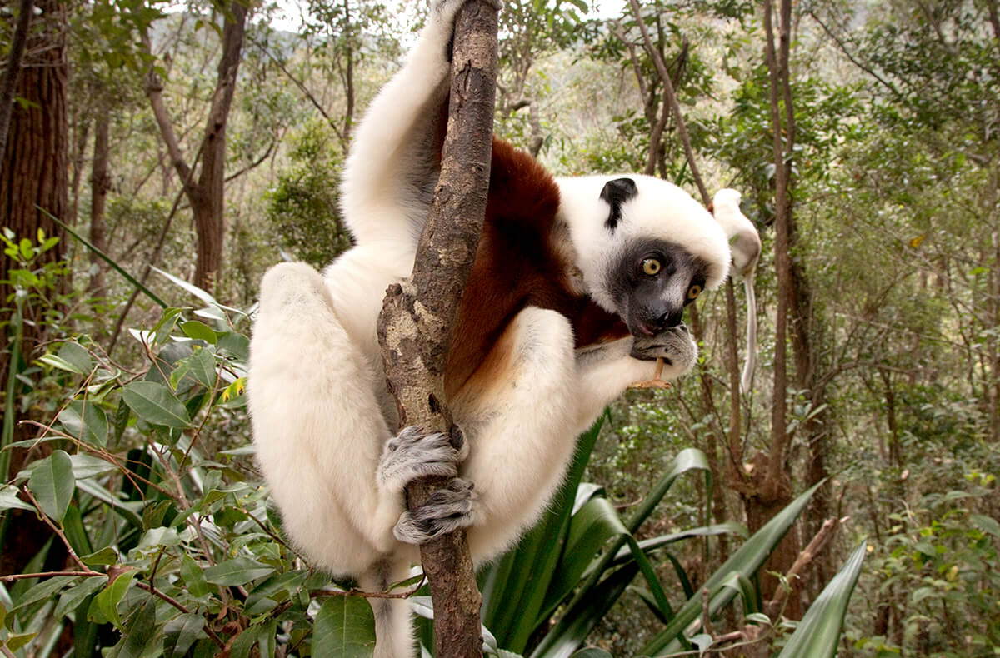
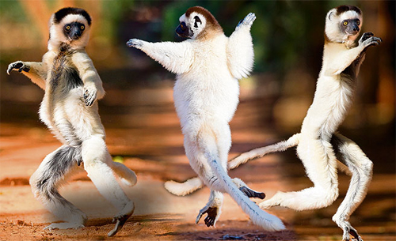
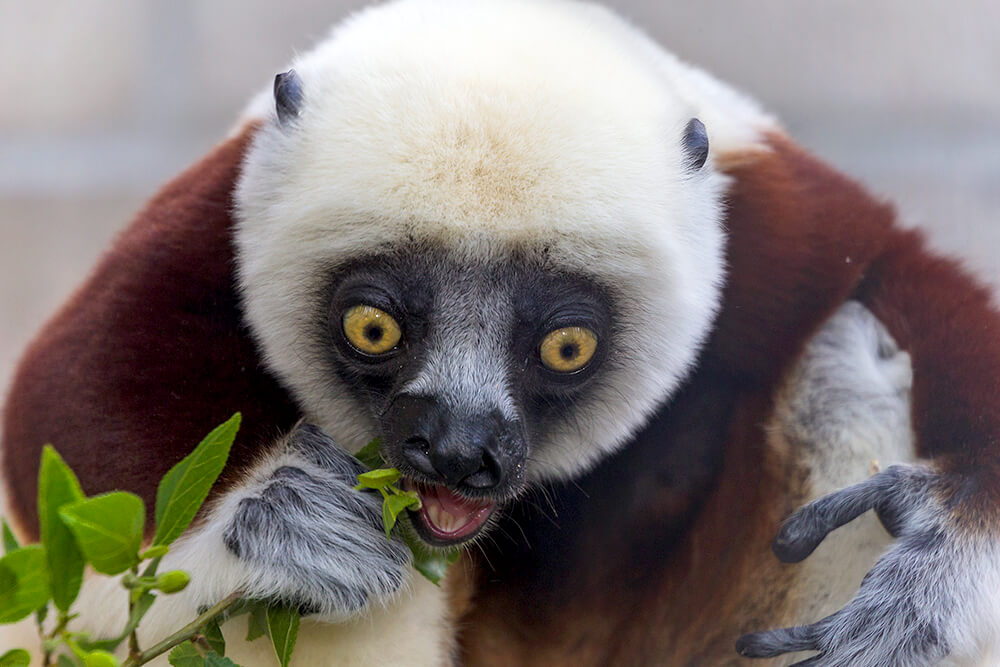
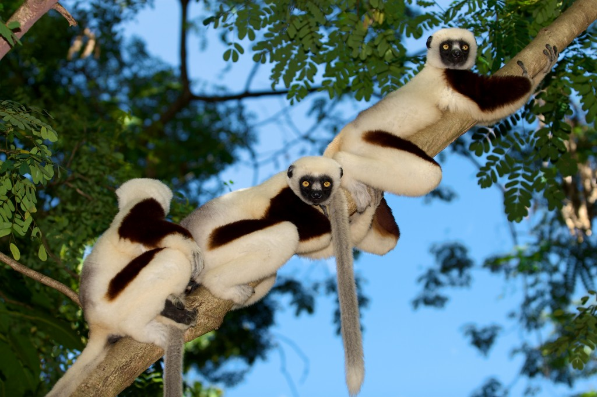
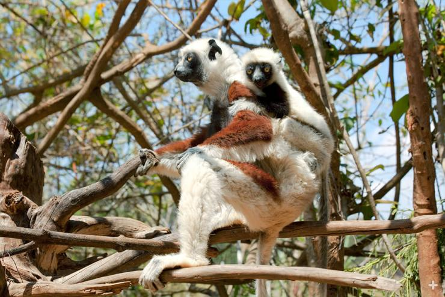
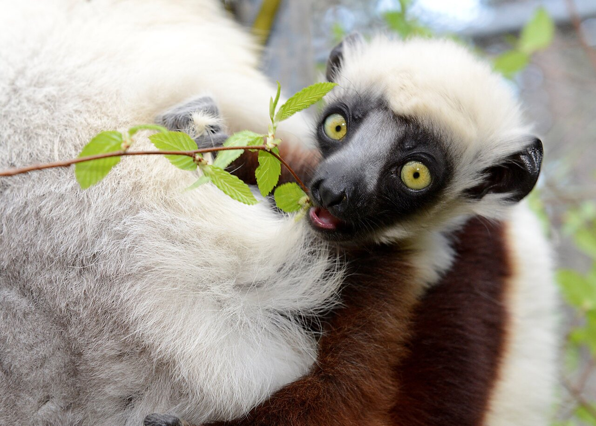
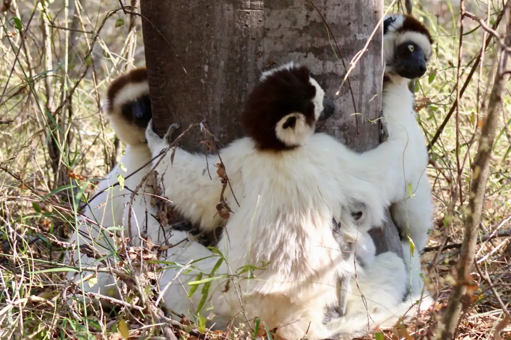

Dancing Lemurs
-

The Sifaka lemurs also known as dancing lemurs are medium-sized indriids with a head and body length of 40 to 55 cm (16 to 22 in) and a weight of 3 to 6 kg (6.6 to 13.2 lb). Their tail is just as long as their body
Their fur is long and silky, with coloration varying by species from yellowish-white to blackish-brown. Their round, hairless face is always black. As with all lemurs, the sifaka has special adaptations for grooming, including a toilet-claw on its second toe and a toothcomb. -

Sifakas move by vertical clinging and leaping, meaning they maintain an upright position leaping from tree trunk to tree trunk and moving along branches. They are skillful climbers and powerful jumpers, able to make leaps up to 10 m (32.8 ft) from one tree to the next. On the ground, they move like all indrids, with bipedal, sideways hopping movements of the hind legs, holding their fore limbs up for balance. Sifakas are diurnal and arboreal.
-

The Dancing Lemur Safaka is a Herbivour therefore plants from part of their nutritous diet.
-

Sifakas live in small, social groups of males and females numbering 3 to 10 individuals of varying ages. Aside from mothers and their offspring, group members are not necessarily related to one another. Members sleep and forage together; they even share territory with other nearby groups.
-

Females may mate with males outside of their immediate group. Males often roam around for long distances to find mates from multiple groups. Many “child care” duties are shared between group members. Infants ride on the back of mom or other group members, as they travel to find food.
-

Between three and four months of age the infants’ are capable of moving about on their own, and mothers give them a helpful nip to encourage their independence. Youngsters become sexually mature around the age of 3.5 years. The oldest individuals raised in human care lived to age 30.
-

Life in the trees protects sifaka groups from the few predators that share their forest homes. Loud piercing alarm calls warn of danger. All members of a group may simultaneously produce the explosive, nasal, hiss-like call “Shi-fakh, shi-fakh, shi-fakh.” This distinctive call, made by all sifakas, is what gives the lemur group its name.